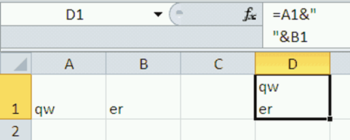

Вставить Перенос строки в формуле [new]

Откуда:
Сообщений: 1179
Можно и непосредственно ввести символ перевода строки Alt+Enter в текстовую константу. Формула теряет в наглядности, но при большом массиве формул можно получить выигрыш в скорости и объеме файла.
="Строка1" & СИМВОЛ(10)& "Строка2" Один важный нюанс: необходимо в свойстве ячейки разрешить перенос!!!!
="ccc"&СИМВОЛ(10)&"dfg"
="ccc"&СИМВОЛ(13)&СИМВОЛ(10)&"dfg"
=ТЕКСТ("ccc"&СИМВОЛ(10)&"dfg";"@")